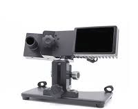

A core component of active vision is the ability to search for objects in the scene. This might entail finding your phone on your desk or the link on this website to volunteer for this study. While we rarely consider what is involved, research has shown search is a complex process that involves the integration of sensory visual input with cognitive abilities, such as short- and long-term memory. These abilities are affected by ageing, with changes in the visual pathway and brain affecting the quality and speed of sensory processes and the capacity of short-term memory. In many cases, older observers compensate for these changes by relying on their experience to predict when and where visual objects are likely to be found. In some situations, however, they may not be familiar with objects in the scene or know where they are most likely to occur.
The objective of this project is to investigate the impact of normal ageing on different sensory and cognitive components of visual search. Understanding the way ageing impacts sensory and cognitive processes during search, will provide important insights into the best ways to design visual displays and search strategies that maintain and support fast and accurate search in different situations for older adults.
|  | The project includes several studies that use different techniques to measure the impact of age on visual search. Eye movement recordings provide a rich source of information about where and when people fixate different objects in response to information about the target’s identity (i.e., its colour and shape). How many fixations are made, and the type of strategies observers use to guide sequences of eye movements, are determined by the resolution and extent of sensory information obtained in a single fixation, as well as the observer’s ability to maintain and use information about the features that distinguish the target from other objects (often called distractors) in the scene. In this project, we will compare eye movement patterns in young and older adults using an infrared camera that tracks the position of the eye relative to objects on computer screen during search. This technique is completely safe and produces data with very high spatial and temporal precision. |
|---|
The image on the right depicts a display containing subsets of blue and red objects. The lines and numbers on the image illustrate the pattern of eye movements (saccades) and fixations during search. Prior to search, the observer is asked to detect a red object with a gap at 90 or 270 degrees. |
|
|---|
We are currently recruiting participants for this study. Participants will be invited to the George Davies Centre on University of Leicester’s city campus and sessions will involve completing some questionnaires, visual screening (acuity charts) and computer-based visual search tasks. Participants will receive Amazon vouchers (£11.00 p/hour) and sessions will take between 1.5 and 3 hours, depending on the study.
If you are interested in taking part, or would like more information about the project, please use the form below. You can also e-mail Milena (mvr2@le.ac.uk) directly.
The study is being conducted by a team of researchers and PhD students at the University of Leicester's School of Psychology and Vision Sciences.
| Last Name | Email Address | Role | |
|---|---|---|---|
| Doug | Barrett | djkb1@le.ac.uk | Principal Investigator |
| Milena | Rota | mvr2@le.ac.uk | PhD Student |
| Tahani | Alqahtani | ta259@le.ac.uk | PhD Student |
The project is supported by a 4 year PhD studentship funded by the BBSRC via the Midlands Integrated Biosciences Training Partnership.
If you would like to know more about the lab's work, see our other pages here.